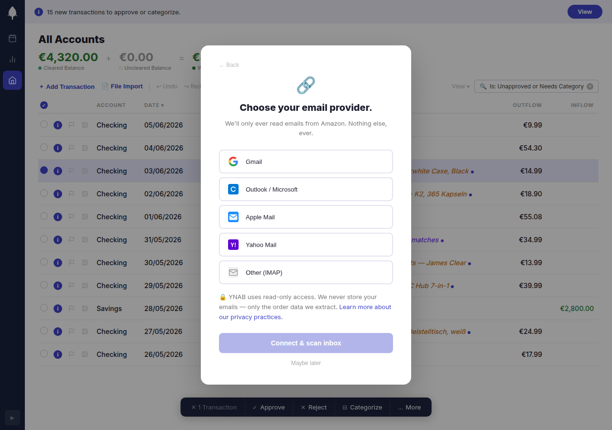
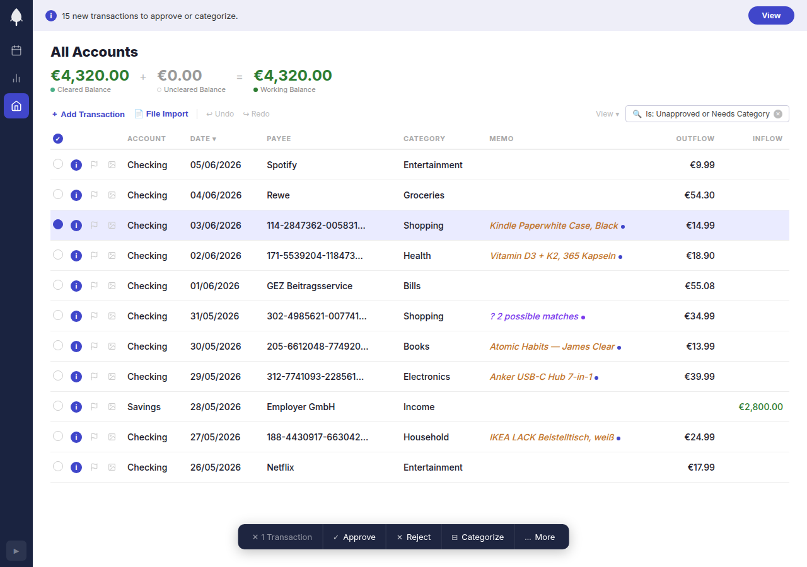
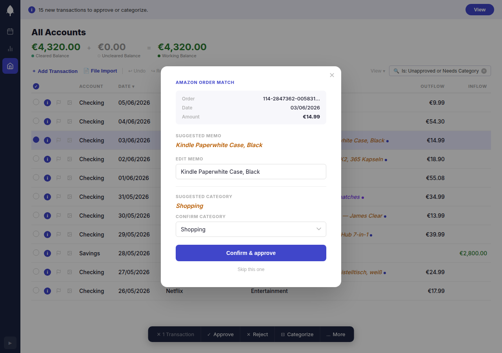
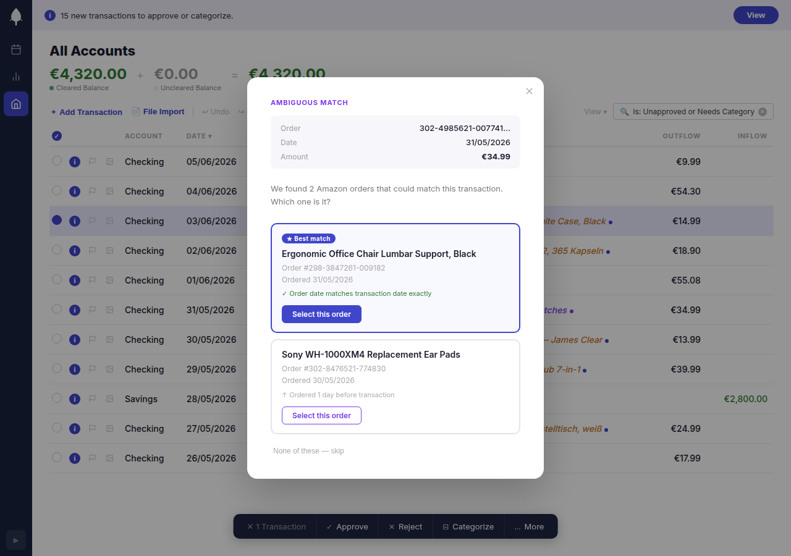

Case Study · YNAB
Give your Amazon transactions a name.
From churn signal to activation fix — problem discovery, solution design, and interactive prototype.
Before
After
Context
Why activation, not just features.
My background is payment processing — the backend layer that sits directly behind a checkout button. In that role I learned that users who can't understand what they spent lose trust in their financial tools and churn. That's not a UX problem. It's an activation and retention problem.
Amazon is YNAB's #1 friction point and a real churn risk. Users who can't categorize their Amazon spending stop trusting the app and stop paying. This case study treats it as an activation problem — not a feature request.
Problem
Amazon is YNAB's blind spot.
YNAB shows every Amazon purchase as a raw order ID — no product name, no category hint. For heavy Amazon shoppers, this means manually cross-referencing order history for every single transaction to know what they spent money on.
Amazon provides no official API for order data. YNAB has no native solution. The community has been asking for years.
67
upvotes on one complaint thread
74
manual workarounds suggested in replies
"Trying to sort out my Amazon transactions in YNAB is the most frustrating part of YNAB… Ready to throw in the towel, not worth the aggravation."
— r/ynab · Amazon Transactions are a nightmare"On the positive side, it makes me not even want to shop on Amazon, so I guess that's a win? /s"
— same thread, OP74 workaround suggestions in one thread — Amazon payment pages, email search, ordering items separately, dedicated credit cards — is not a sign that users found solutions. It's a sign that no good solution exists.
"Ready to throw in the towel" is not a feature request. It's a cancellation in progress.
Solution
Match the email. Enrich the transaction.
Amazon sends an order confirmation email for every purchase. That email contains the product name and the exact charge amount. YNAB already has the transaction amount and date. The gap between them is solvable.
Connect email via OAuth
Read-only access, scoped to Amazon sender addresses only. Works with Gmail, Outlook, and standard IMAP. No password stored.
Match by amount + date window
Amazon charges typically hit your bank 1–3 days after the order date. We match on exact amount within a ±3 day window, with closest-date as tiebreaker for ambiguous cases.
Suggest, don't override
The product name appears as an editable suggestion in the memo field — half-dark, clearly proposed. The category is AI-inferred but one click to change. The user stays in control.
The Mockup
Try it yourself.
An interactive prototype built in plain HTML and CSS — no framework. Click through the full onboarding flow.
Screen by Screen
The decisions behind each screen.

Screen 1 — Announcement Modal
Lead with the benefit, not the feature.
The modal triggers on first login after launch. Headline is "Give your Amazon transactions a name." — not "Connect your email." The benefit leads. The mechanism follows. Dismiss is always available; no forced opt-in.

Screen 2 — Email Connect
Earn the trust before asking for access.
The OAuth screen explains exactly what YNAB reads (Amazon confirmation emails only), what it never reads (everything else), and why. Privacy reassurance is not fine print — it's the headline of this screen.

Screen 3 — Enriched Transaction List
Show the value in context, not in isolation.
Enriched transactions appear highlighted in the normal transaction list — same view users already know. The product name is visible in the memo column immediately, no extra step needed to see the enrichment.

Screen 4 — Transaction Detail
Suggestions, not decisions.
The memo field shows the product name in a half-dark suggestion style — visually distinct from confirmed text. Category is AI-suggested with a confidence indicator. One click to confirm, one click to change. Nothing is ever applied without user intent.

Screen 5 — Ambiguous Match
When confidence is low, say so.
If two orders match the same transaction by amount and date, we surface both and ask. "We found 2 possible orders — which is it?" The user picks. We learn. No silent wrong guess.
Technical Approach
No Amazon API required.
The feature connects via email OAuth (Gmail, Outlook, IMAP) with read-only scope narrowed to Amazon sender addresses. Order confirmation emails contain both the product name and the charge amount. The matching algorithm pairs each email to a YNAB transaction by exact amount within a ±3-day date window — accounting for the typical delay between order placement and bank charge. Ambiguous matches (same amount, same window) surface to the user rather than guessing silently. Category suggestions are generated by a lightweight AI classifier trained on product names — no product taxonomy API, no Amazon data agreement needed.
What I'd Measure
How we know it's working.
% of Amazon transactions auto-enriched
Target: >80% within 30 days of email connection. The core promise — if we're not enriching most transactions, the feature isn't working.
Feature retention at 90 days
% of users who connected their email and are still connected after 90 days. Disconnect = the feature failed to earn trust or deliver ongoing value.
Memo edit rate
How often users override the suggested product name. Low = the suggestion is accurate and trusted. High = matching quality needs work.
Time-to-categorize
Does enrichment reduce the time users spend on Amazon transactions? Measured via session data on the transaction detail view before/after rollout.
Time-to-budgeted — Amazon-heavy cohort
For users with 10+ Amazon orders/month: how long after a purchase lands in YNAB until it's categorized and budgeted? Measured at 1, 3, and 6 months post-rollout. If the feature works, this window should collapse — less lag between spending and understanding.
Churn attribution — Amazon-heavy cohort
Of users who cancel, what share had 10+ Amazon orders/month? Compared before and after rollout at 1, 3, and 6 months. If Amazon friction is a real churn driver, fixing it should shrink this cohort's share of cancellations. This is the business outcome the feature is ultimately optimizing for.
What's Next
This is a platform, not a feature.
The email-parsing and matching logic built for Amazon works for any retailer that sends order confirmation emails. Phase 2 expands the surface area.
Expand beyond Amazon
Zalando, Otto, eBay, Etsy — any retailer with structured order confirmation emails. Same matching logic, broader coverage.
Multi-inbox support
Households where multiple people shop on one account from different email addresses. The #2 complaint in the r/ynab thread.
Smarter categorization
Learn from user overrides to improve AI suggestions over time. The model gets better the more it's used and corrected.
Receipt parsing
Extend from email to PDF and photo receipts — bringing the same enrichment to in-store purchases.
Each expansion phase reduces a new category of comprehension gap — and each gap closed is a reason for a paying user to stay.
Want to build something like this?
I find the problem, design the solution, and ship it.
Get in touch